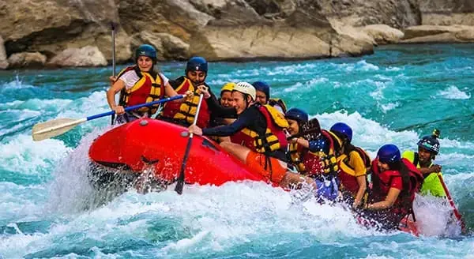
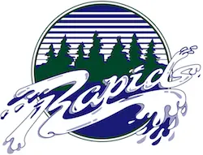
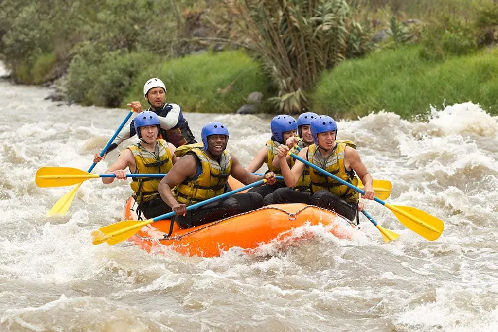
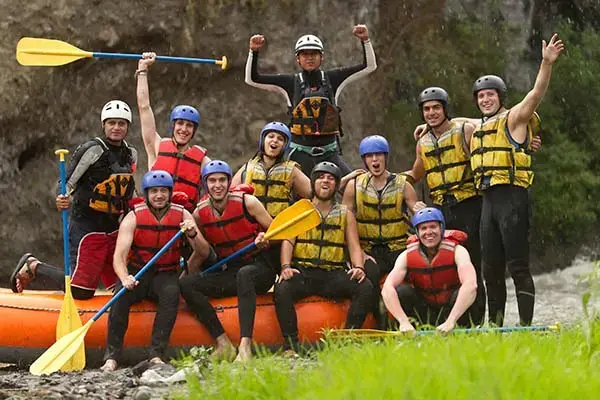
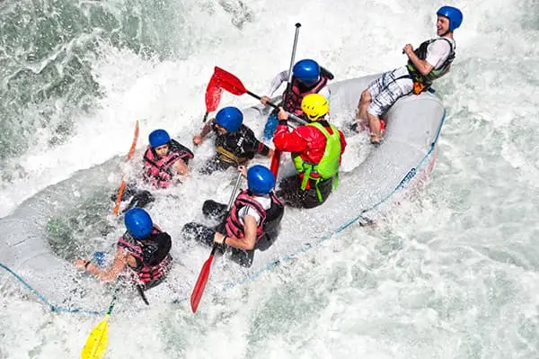
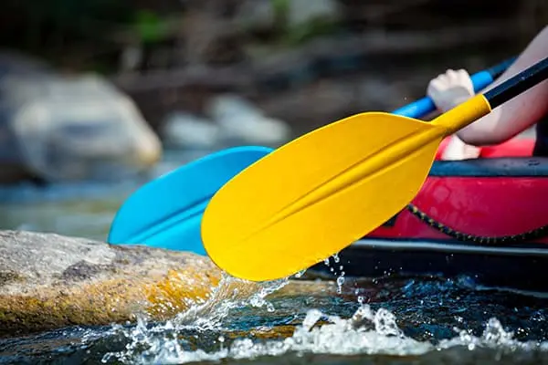
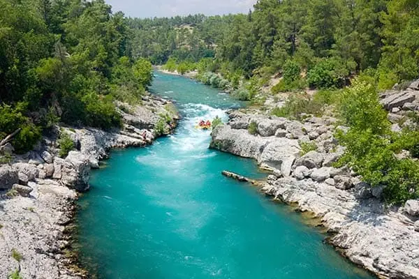
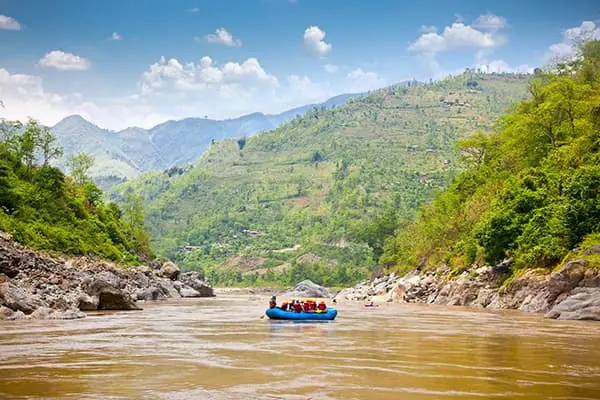
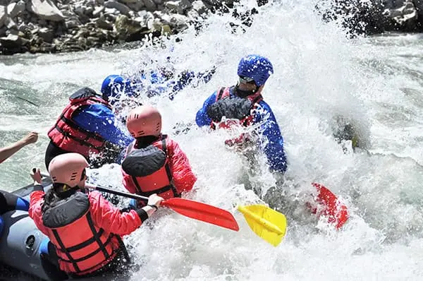

At Congo Rapids Rafting, our mission is to provide exciting, safe, and unforgettable river adventures. We believe that everyone should have the opportunity to discover the beauty and excitement of whitewater rafting.



At Congo Rapids Rafting, our mission is to provide exciting, safe, and unforgettable river adventures. We believe that everyone should have the opportunity to discover the beauty and excitement of whitewater rafting.
Congo Rapids Rafting was created with a passion for adventure and a love for the river. Our company began with a small group of outdoor enthusiasts who wanted to share exciting river experiences with families, friends, and visitors. Over time, we have grown while keeping our commitment to safety, teamwork, and memorable adventures.

Over time, we have grown while keeping our commitment to safety, teamwork, and memorable adventures. Today, we invite visitors to experience the excitement of Congo Rapids while discovering the beauty of the river.




